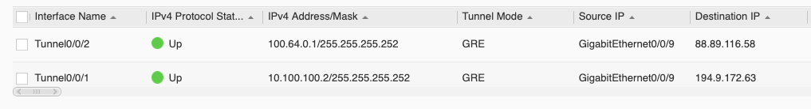
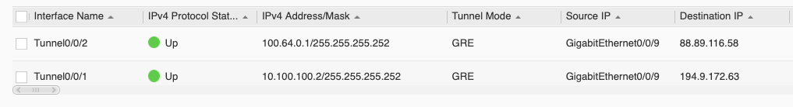
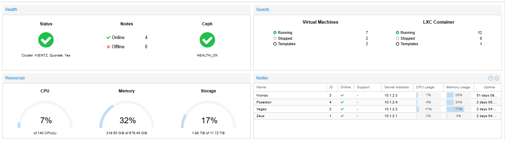

Compétences Humaines
- Persévérance et capacité d’apprentissage
- Autonomie dans la résolution de problèmes
- Esprit d’analyse et logique
- Communication claire et structurée
Compétences Techniques
- Configuration de réseaux (VLAN, routage, adressage IP)
- Administration Linux & Windows
- Langages Web : HTML / CSS
- Virtualisation (Proxmox, VMWare Esxi)
- Langages de programmation : C / JAVA
- VoIP Asterisk FreePBX / Mitel
Projets
Personnel : Conception & Administration de mon réseau avancé
Mise en place d’une infrastructure réseau complète comprenant plusieurs VLAN, du routage inter-VLAN, des services segmentés et un tunnel GRE permettant de faire remonter des IP publiques depuis un VPS vers mon réseau domestique. Cette architecture me permet d’héberger des services accessibles depuis Internet, de sécuriser les communications et de gérer efficacement les différentes zones de mon réseau.

 

Personnel : Script d'installation automatisée de Zabbix Agent
Script permettant d’installer automatiquement l’agent Zabbix sur une machine Linux. Il configure le dépôt, installe l’agent, règle les paramètres de connexion avec le serveur Zabbix et active le service.
Fonctionnalités :
- Installation automatique du paquet Zabbix Agent
- Paramétrage automatique du serveur Zabbix à contacter
- Démarrage + activation du service au boot
- Compatible avec les distributions Linux courantes
Personnel : Installation & Configuration d'un service de VoIP
Configuration d’Asterisk et des PABX Mitel 430 et Mitel 5000, avec mise en place de trunks SIP entre les systèmes. Gestion des appels, transferts et messagerie vocale, ainsi que des postes Mitel 6867i.

Personnel : Installation d'un cluster Proxmox
Installation d’un cluster Proxmox permettant d’interconnecter plusieurs nœuds pour la haute disponibilité, la gestion centralisée des machines virtuelles et la répartition intelligente des ressources.
Personnel : Création d'une API de controle d'ESP32/8266
Développement d’une API capable d’envoyer des requêtes HTTP aux modules ESP32/ESP8266 afin d’exécuter des actions à distance (contrôle de GPIO, LED, capteurs…). L’API centralise les commandes et communique directement avec les microcontrôleurs via le réseau local.